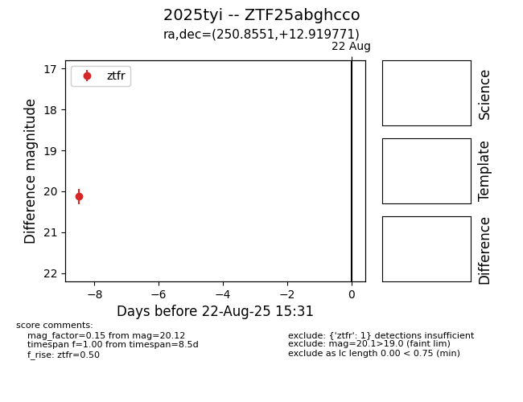

Target 2025tyi at 2025-08-22 15:31, see:
FINK: fink-portal.org/ZTF25abghcco
Lasair: lasair-ztf.lsst.ac.uk/objects/ZTF25abghcco
ALeRCE: alerce.online/object/ZTF25abghcco
TNS: wis-tns.org/object/2025tyi
YSE: ziggy.ucolick.org/yse/transient_detail/2025tyi
alt names
ZTF25abghcco (ztf,alerce)
2025tyi (tns,yse)
coordinates:
equatorial (ra, dec) = (250.8551,+12.91977)
galactic (l, b) = (30.3995,+34.17276)
photometry
last ztfr=20.12
1 ztfr detections
